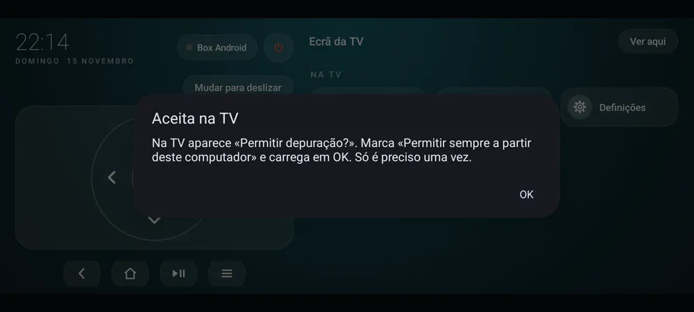

O que faz
Um comando completo, e muito mais.
Comando completo, por Wi-Fi
Uma zona de toque para mexer e carregar em OK, e todos os botões do comando. Desliga e liga a TV, muda de canal, escreve na TV sem andar letra a letra.
- D-pad e toque: desliza para mexer, toca para OK
- Voltar, início, play/pausa, menu, volume
- Pesquisar, escrever na TV, ⏪ ⏩, canal ▲ ▼
- Vertical ou deitado (duas colunas, como um tablet)

Vê o ecrã da TV no telemóvel
Carrega em Ver aqui e a imagem da TV aparece no telemóvel, em direto — e serve também de zona de toque. Vês o que está a dar, abres as apps da TV com as imagens delas, e chegas às fontes HDMI e às definições.
- «Ecrã da TV» em vídeo fluido (ou imagens, se a box não deixar gravar)
- «A dar na TV» com a capa do que está a tocar
- Apps da TV com as imagens; toca e abre na TV
- Fontes HDMI, ecrã dividido, definições
Como ligar
Liga à TV uma vez, e pronto.
A app descobre sozinha o que cada TV ou box consegue e mostra só as funções que lá funcionam. Há dois caminhos:
Google TV / Android TV
Usa o serviço de comando que já vem na TV (o mesmo da app Google TV). Emparelhas uma vez com o código de 6 caracteres que aparece na TV.
Dá: comando completo, escrever, abrir apps conhecidas (Netflix, YouTube, Prime Video, Disney+…), fontes e definições.
Box Android (ou para ver o ecrã da TV)
Para a lista de apps, o ecrã da TV no telemóvel e o «A dar na TV», ativa a Depuração por rede na TV/box:
Definições › Acerca › carrega 7 vezes em «Compilação». Depois, em Opções de programador, liga «Depuração USB» e «Depuração por rede». Na primeira ligação, marca «Permitir sempre» e OK.
Instalar
Em menos de um minuto.
1. Descarrega o APK no telemóvel. 2. Abre o ficheiro e, se o Android pedir, autoriza instalar apps desta origem. 3. Abre a app com a TV ligada e na mesma rede Wi-Fi.
Descarregar APKPerguntas
Antes de instalares
Com que TVs e boxes funciona?
Google TV, Android TV e boxes Android, incluindo as boxes baratas sem serviços Google. A app ajusta-se ao que cada aparelho consegue.
Como vejo o ecrã da TV no telemóvel?
Carregas em «Ver aqui». Precisa da Depuração por rede (ADB) ligada na TV/box, ou do ecrã inicial TV-Debloat. Se a box não deixar gravar o ecrã, passa a imagens em vez de vídeo.
É seguro?
Sim. A ligação à Google TV é cifrada (TLS) e a chave do telemóvel fica no cofre do Android. Nas boxes por ADB, a box aceita a tua chave só uma vez.
A TV não aparece?
Confirma que o telemóvel e a TV estão na mesma rede Wi-Fi. Também podes escrever o IP da TV à mão.